<div class="container">
  <div id="contents" class="col-md-12 main-content"><h1 xmlns="http://www.w3.org/1999/xhtml" id="toc-id-28">Mini-pat electronic systems and control</h1>
    <span xmlns="http://www.w3.org/1999/xhtml">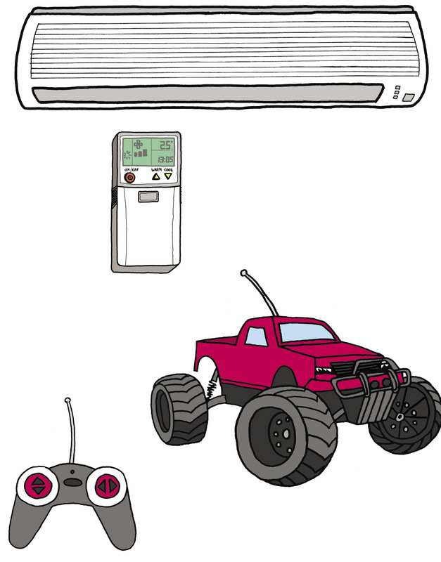   

  

     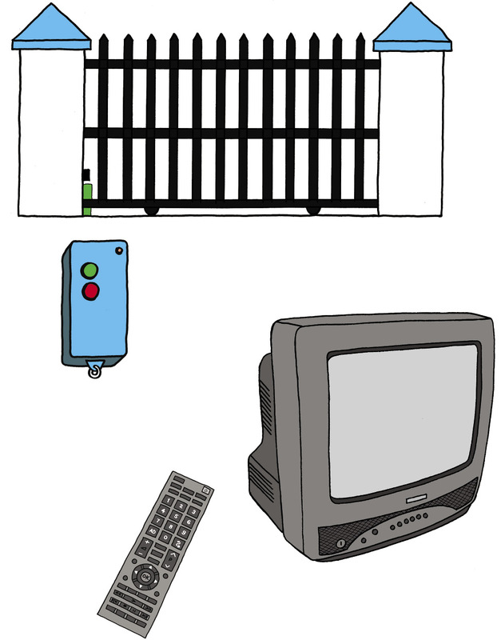</span>  
 <figcaption xmlns="http://www.w3.org/1999/xhtml"> <p class="x--caption para-style-override-1">Figure 1: Many
    everyday devices use electronic control circuits.</p></figcaption><b xmlns="http://www.w3.org/1999/xhtml">electronic circuits</b> to control
    electric circuits with bigger currents.<p xmlns="http://www.w3.org/1999/xhtml" class="x--Body-box-no-indent">An <b>electronic circuit</b> is different from an
      electric circuit because it only uses a very small current,
      and because it uses electronic control devices such as
      thermistors, LDRs, diodes and transistors.</p>
    <li xmlns="http://www.w3.org/1999/xhtml" class="x--Body-text-bullet">
      <p><b>Ordinary circuit
      breakers:</b></p> Shuts off a circuit (for example the circuit
      supplying all the lights in a house) when the current becomes
      too big (if the current is too big for the thickness of wire
      used, the wire will overheat).</li>

      <li xmlns="http://www.w3.org/1999/xhtml" class="x--Body-text-bullet">
      <p><b>Residual-current circuit
      breakers:</b></p> Switches off the main power supply if it
      detects a leakage of power, such as when a person
      accidentally touches a "live" electrical wire or contact and
      the electricity is then conducted through his or her body.
      This device has to cut the current very quickly; otherwise
      the person can die due to electric shock. Therefore it
      switches off the power even when it detects only a small
      amount of leakage of electrical current.</li>
    <p xmlns="http://www.w3.org/1999/xhtml" class="x--Body-Text para-style-override-1"><span>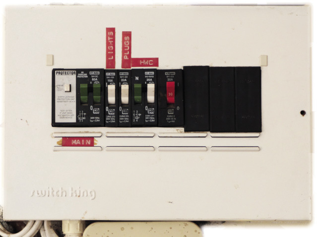</span></p><figcaption xmlns="http://www.w3.org/1999/xhtml"><p><span class="char-style-override-5">Figure 2: An electrical distribution
    board with circuit breakers</span></p></figcaption><li xmlns="http://www.w3.org/1999/xhtml" class="x--Body-text-bullet">
      <b>ovens:</b> to control the
      temperature,</li>

      <li xmlns="http://www.w3.org/1999/xhtml" class="x--Body-text-bullet">
      <b>radios and other music
      appliances:</b> to control the volume of the
      speakers,</li>

      <li xmlns="http://www.w3.org/1999/xhtml" class="x--Body-text-bullet">
      <b>some energy-saving lights:</b> to
      switch off automatically when there is enough natural light,
      and</li>

      <li xmlns="http://www.w3.org/1999/xhtml" class="x--Body-text-bullet">
      <b>kettles:</b> to switch off when
      the water boils.</li>
    <span xmlns="http://www.w3.org/1999/xhtml" class="char-style-override-7">sensor</span> is a control
    device that can have a <span xmlns="http://www.w3.org/1999/xhtml" class="char-style-override-7">variable effect</span>. A switch can
    only be open (infinitely large resistance) or closed (zero
    resistance), so a switch is not a sensor. Devices such as
    thermistors and LDRs can have different resistances, depending
    on the temperature or amount of light. They can therefore be
    used as sensors. A device that can generate a voltage, such as
    a photovoltaic cell, can also be used as a sensor. A sensor
    "senses" something such as temperature, or light, just as your
    body's senses do. A variable resistor is also a control device,
    but it is not a sensor, because it is a device for which the
    user can <span xmlns="http://www.w3.org/1999/xhtml" class="char-style-override-7">set</span> the
    resistance.<div xmlns="http://www.w3.org/1999/xhtml" class="frame-7">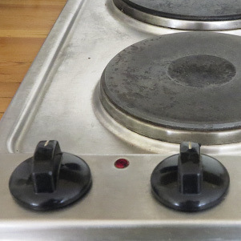</div>

      <div xmlns="http://www.w3.org/1999/xhtml" class="frame-7">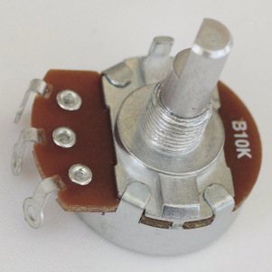</div>

      <figcaption xmlns="http://www.w3.org/1999/xhtml">
        <p class="x--caption">Figure 3: The control knob of a stove
        plate is connected to a variable resistor. This controls
        the current through the heating element. The bigger the
        current, the hotter the plate will be.</p>
      </figcaption>
    <p xmlns="http://www.w3.org/1999/xhtml" class="Normal para-style-override-52"><span>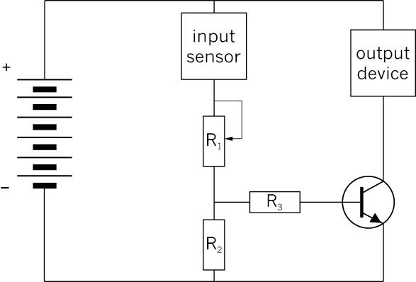</span> </p>
<figcaption xmlns="http://www.w3.org/1999/xhtml">
    <p class="x--caption para-style-override-1">Figure 4: The
    control circuit that you built in Chapter 5 for a fire
    alarm</p>
</figcaption><b xmlns="http://www.w3.org/1999/xhtml">The scenario for the
    Mini-PAT</b><div xmlns="http://www.w3.org/1999/xhtml" class="frame-7"></div>

      <figcaption xmlns="http://www.w3.org/1999/xhtml">
        <p class="x--caption">Figure 5</p>
      </figcaption>
    <span xmlns="http://www.w3.org/1999/xhtml">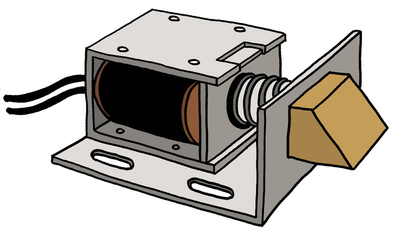 

       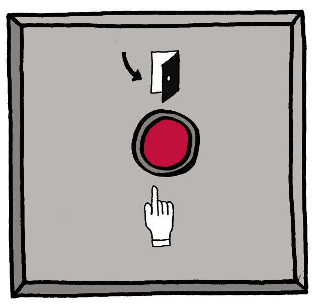</span>
    <figcaption xmlns="http://www.w3.org/1999/xhtml">

    <p class="x--caption">Figure 6: An electric door lock</p>
</figcaption><span xmlns="http://www.w3.org/1999/xhtml">Look at the brown</span> part
    on the right-hand side of the lock mechanism above. This is the
    part that moves in or out to o<span xmlns="http://www.w3.org/1999/xhtml">pen or lock the door. This
    part is called a "latch".</span><p xmlns="http://www.w3.org/1999/xhtml" class="Normal para-style-override-21"><span>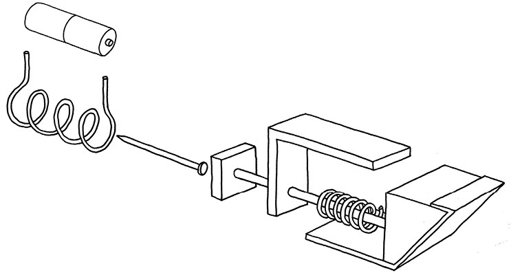</span> </p>
<figcaption xmlns="http://www.w3.org/1999/xhtml">
    <p class="x--caption">Figure 7: A 3D assembly drawing of the
    parts inside an electric door lock</p>
</figcaption><b xmlns="http://www.w3.org/1999/xhtml">Design brief</b><b xmlns="http://www.w3.org/1999/xhtml">Specifications</b><b xmlns="http://www.w3.org/1999/xhtml">Constraints</b><span xmlns="http://www.w3.org/1999/xhtml" class="char-style-override-3"><b>Design sketches</b></span> 
    <span xmlns="http://www.w3.org/1999/xhtml" class="char-style-override-3">Week 2</span><p xmlns="http://www.w3.org/1999/xhtml" class="x--Body-box-no-indent"><b>There is no such thing as a perfect
      design!</b> For example, you can make a complicated design
      that will work very well, but that will be expensive and
      difficult to build. Or you can make a simple and cheap design
      that works, but is not strong enough.</p>
    <b xmlns="http://www.w3.org/1999/xhtml">Learn from the different designs that
    different people made</b><li xmlns="http://www.w3.org/1999/xhtml" class="x--Body-text-bullet">
         First
        generate ideas, sketch and explain them,without anyone
        saying anything negative aboutthe ideas.

        
      </li>

      <li xmlns="http://www.w3.org/1999/xhtml" class="x--Body-text-bullet para-style-override-1">
        

        <div class="frame-202"/>Once you have several ideas on
        the table, startthinking about how and whether the
        differentideas will work or not. Don't talk about
        "Mary'sdesign" or "Sipho's design". Rather talk
        about"Design C" or "Design B". Once someone has puta design
        on the table, you talk about the design.You do not talk
        about the person. You evaluatethe designs. You do not
        evaluate yourself orsomeone else.

        
      </li>
    <p xmlns="http://www.w3.org/1999/xhtml" class="x--Body-box-no-indent">If someone makes a
          negative remark at this stage, you should say
          <span class="char-style-override-7">"Red flag! No
          negative remarks at this stage."</span></p>
        <p xmlns="http://www.w3.org/1999/xhtml" class="x--Body-box-no-indent">Saying "Mary's made a
          bad design" or "Sipho's is much better", for example,
          will hurt someone's feelings or make others feel proud or
          arrogant. If someone says "Mary's design ...", you should
          say <span class="char-style-override-7">"Red flag! We
          call that Design C."</span></p>
         
 
 
 
<span xmlns="http://www.w3.org/1999/xhtml" class="char-style-override-7">If you do not do this, you
    won't be able to build a model of your design.</span><b xmlns="http://www.w3.org/1999/xhtml">prototype</b>.<p xmlns="http://www.w3.org/1999/xhtml" class="x--Body-box-no-indent">Designers and engineers
      usually make many <b>prototypes</b> before the design
      is good enough to start manufacturing and selling it. Each
      prototype is an attempt to improve on the previous one.</p>
    <li xmlns="http://www.w3.org/1999/xhtml" class="x--Body-text-bullet"> You
      brought all the materials needed to make a model of your
      design. </li>

      <li xmlns="http://www.w3.org/1999/xhtml" class="x--Body-text-bullet"> You
      accurately made the model according to your design
      drawings. </li>

      <li xmlns="http://www.w3.org/1999/xhtml" class="x--Body-text-bullet"> You
      successfully built the electric output device. </li>

      <li xmlns="http://www.w3.org/1999/xhtml" class="x--Body-text-bullet"> You
      connected your model to the simple circuit with the output
      device,and used a good method to test it. </li>

      <li xmlns="http://www.w3.org/1999/xhtml" class="x--Body-text-bullet"> After you
      tested your model for the first time, you made a list of all
      thepossible reasons that your model is not working or why it
      is notworking well. </li>

      <li xmlns="http://www.w3.org/1999/xhtml" class="x--Body-text-bullet"> You used
      the list to fix or improve your model. </li>

      <li xmlns="http://www.w3.org/1999/xhtml" class="x--Body-text-bullet"> You tested
      your model again, writing down the problems, and going
      backand fixing or improving your model until it worked, at
      least one more time. </li>

      <li xmlns="http://www.w3.org/1999/xhtml" class="x--Body-text-bullet"> Your model
      worked, or you wrote a good explanation and made sketches of
      what you still need to change on your model to make it
      work. </li>
    <span xmlns="http://www.w3.org/1999/xhtml" class="char-style-override-3">Week 4</span><span xmlns="http://www.w3.org/1999/xhtml" class="char-style-override-23">ons</span> (90 minutes)<li xmlns="http://www.w3.org/1999/xhtml" class="x--Body-text-bullet"> You were
      well prepared for your presentation. </li>

      <li xmlns="http://www.w3.org/1999/xhtml" class="x--Body-text-bullet"> You
      explained how you made progress during the design
      process. </li>

      <li xmlns="http://www.w3.org/1999/xhtml" class="x--Body-text-bullet"> You looked
      at your audience and spoke clearly. </li>
    <p xmlns="http://www.w3.org/1999/xhtml" class="x--Head-extension">An alternative to the kettle
    swicth project: Designing and building a circuit continuity
    tester</p>

     
      <p xmlns="http://www.w3.org/1999/xhtml" class="x--Body-opener">Your teacher may decide to let you
      do the following project instead of designing and building an
      automatic kettle switch.</p>

      <p xmlns="http://www.w3.org/1999/xhtml" class="x--Body-opener">Often when people have to connect
      wiresin electric circuits, there are so manywires that it is
      difficult to know whichtwo wire ends are of the same
      wire.</p>

      <p xmlns="http://www.w3.org/1999/xhtml" class="x--Body-opener">It would help to have a device
      thatshows whether two wire ends areconnected or not. This is
      whata "circuit continuity tester" does.</p>

      <div xmlns="http://www.w3.org/1999/xhtml">
        <div class="frame-7">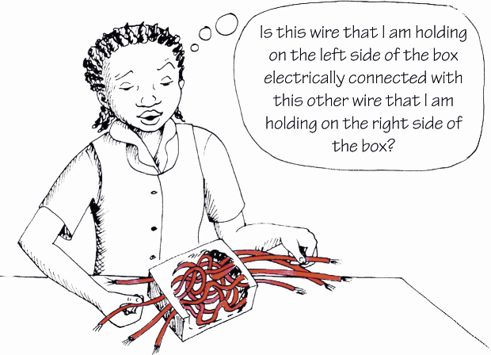</div>

        <div class="Basic-Text-Frame">
          <p class="x--caption">Figure 8</p>
        </div>
     
    </div> 

    
      <p xmlns="http://www.w3.org/1999/xhtml" class="x--Body-opener">A circuit continuity tester is
      actually an open circuit. The circuit can only be closed by
      the two wire ends thatyou are testing. Use the two test leads
      of the circuitcontinuity tester to touch the two wire ends
      that youwant to test. If there is a path for current to
      beconducted between the two wire ends, this willcomplete the
      circuit and a light or a buzzer on thecircuit continuity
      tester will be activated.</p>

      <div xmlns="http://www.w3.org/1999/xhtml" class="aside">
        <p class="x--Body-box-heading"><b>Safety warning:</b></p>

        <p class="x--Body-box-no-indent">First switch off the power
        supply before you do a test such as this one.</p>
      </div>
  

   
      <p xmlns="http://www.w3.org/1999/xhtml" class="x--Body-opener">Note that a circuit continuity
      tester cannot tell you whether the two wire ends are of the
      same wire. It can only tell you whether there is a path for
      current to be conducted between the two wire ends, in other
      words whether the two wire ends are electrically connected.
      But if you know that there are no splitting or joining of
      wires in between the two wire ends, then the wire ends can
      only be electrically connected if they are of the same
      wire.</p>

      <p xmlns="http://www.w3.org/1999/xhtml" class="x--Body-opener">If you design and build a circuit
      continuity tester as your project, think about the
      following:</p>

      <ul xmlns="http://www.w3.org/1999/xhtml"><li class="x--Body-opener-bullet"> It
        should be easy to let the test leads of the circuit
        continuity tester make proper electrical contact with the
        wire ends.</li>

        <li class="x--Body-opener-bullet"> The
        tester should be small.</li>

        <li class="x--Body-opener-bullet"> The
        tester should be protected from shocks, for example if it
        gets dropped.</li>

        <li class="x--Body-opener-bullet"> The
        tester should be protected from water, since water can
        cause a short circuit.</li>
      </ul> 

 
      <p xmlns="http://www.w3.org/1999/xhtml" class="x--Body-opener">A few ideas for building a circuit
      continuity tester are shown in the photos below.</p>
<figure xmlns="http://www.w3.org/1999/xhtml">
      <p class="x--caption"><span></span> </p>
<figcaption>
      <p class="x--caption">Figure 9</p>
</figcaption></figure><figure xmlns="http://www.w3.org/1999/xhtml">
      <p class="x--caption"><span>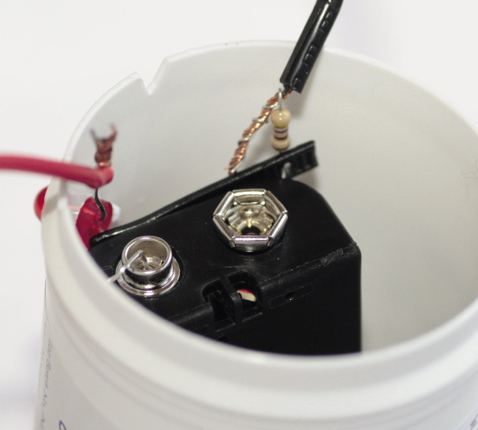</span> </p>
<figcaption>
      <p class="x--caption">Figure 10</p>
    </figcaption>
  </figure>

  </div>
</div>